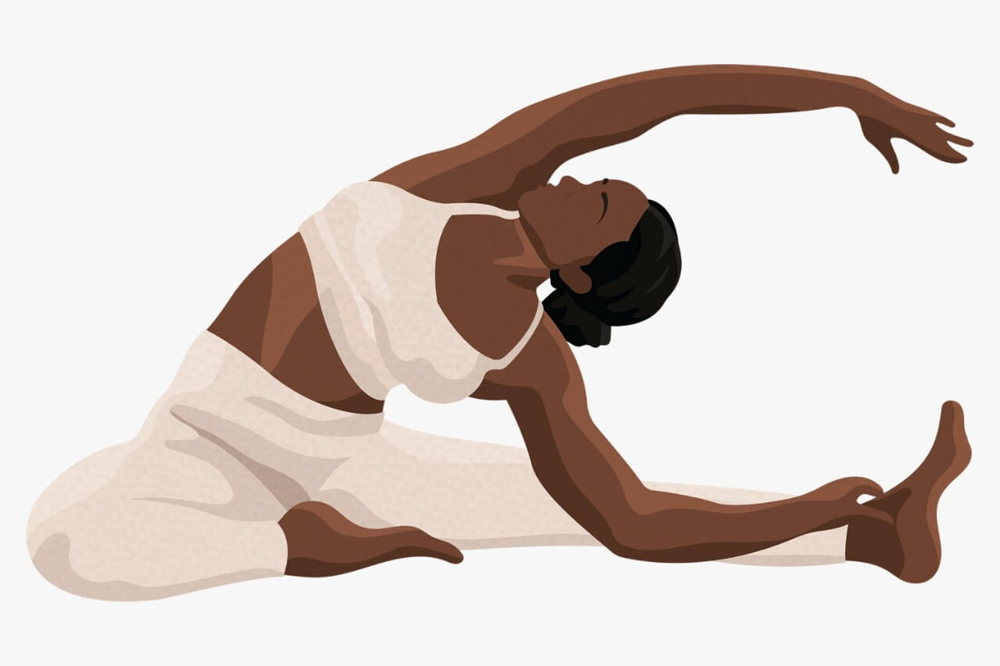

¿Qué es la yoga y para qué sirve?
El yoga es una disciplina tradicional espiritual, física y mental originada en la India. Es una de las seis doctrinas ortodoxas del hinduismo. Enfatiza la meditación y la liberación, siendo su texto principal el Yoga sutra. Esta palabra se asocia con prácticas de meditación en el hinduismo, el budismo y el jainismo.
El yoga tiene varias escuelas, siendo las fundamentales: el raya yoga, jñana yoga y karma yoga, y las no fundamentales hatha yoga, bhakti, ashtanga vinyasa yoga, kriyā yoga y kundalini yoga.
Volver08/06/2022 - By Ariel
